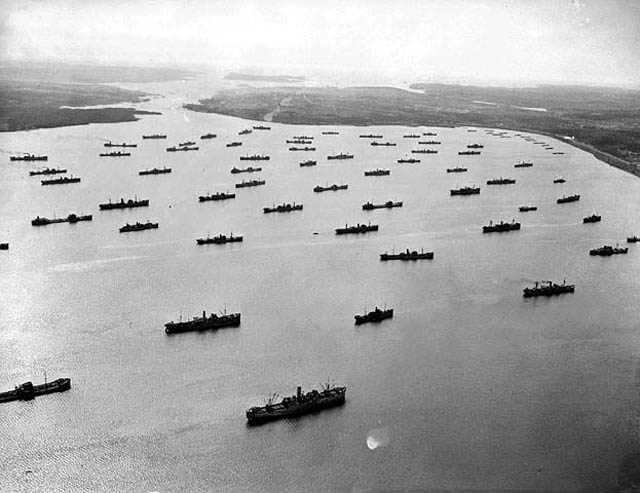
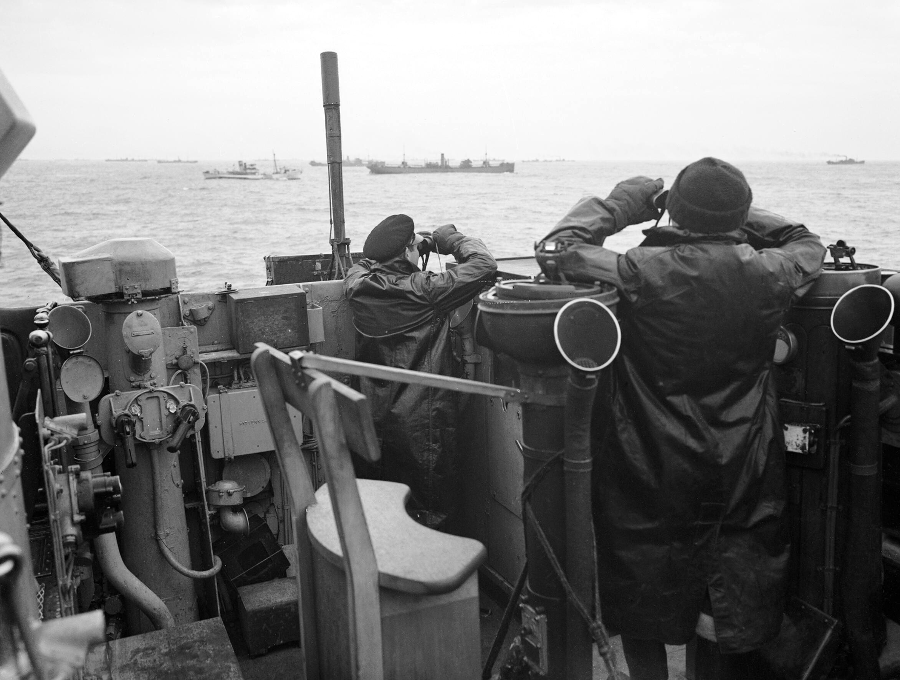
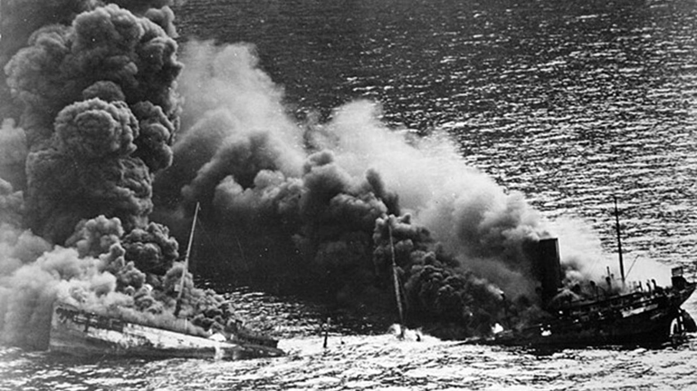

The Battle of the Atlantic: U-Boat Wolfpacks and the Lifeline of Great Britain
Lasting for the entirety of the conflict from 1939 to 1945, the Battle of the Atlantic was the longest continuous military campaign of the Second World War. At stake was nothing less than the survival of Great Britain, which relied entirely on merchant shipping across the Atlantic Ocean for food, raw materials, and military fuel.

Karl Dönitz and the Wolfpack Tactic
Grand Admiral Karl Dönitz, commander of the German submarine fleet, deployed the devastating "Wolfpack" (*Rudeltaktik*) strategy. U-boats operated in coordinated patrols across the open ocean. Once a lone scout spotted an Allied merchant convoy, it would signal neighboring submarines, massing a strike force to attack merchant vessels simultaneously under the cover of night.

Turning the Tide: Radar, Enigma, and Escorts
For years, Allied shipping suffered catastrophic losses. However, the introduction of centimetric radar, Ultra codebreaking intelligence, long-range maritime patrol aircraft, and dedicated escort carrier groups eventually turned the tide. By mid-1943, Allied anti-submarine warfare had decimated the U-boat fleet, securing the vital supply highway necessary for the ultimate liberation of Europe.
